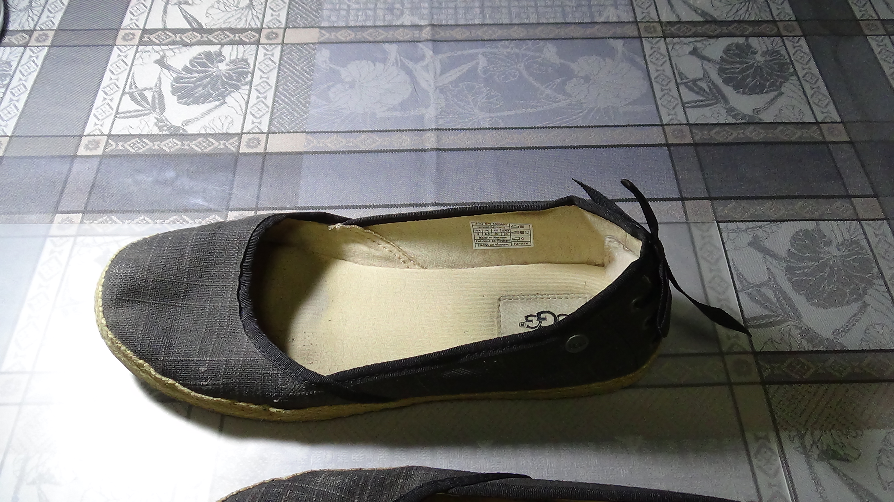
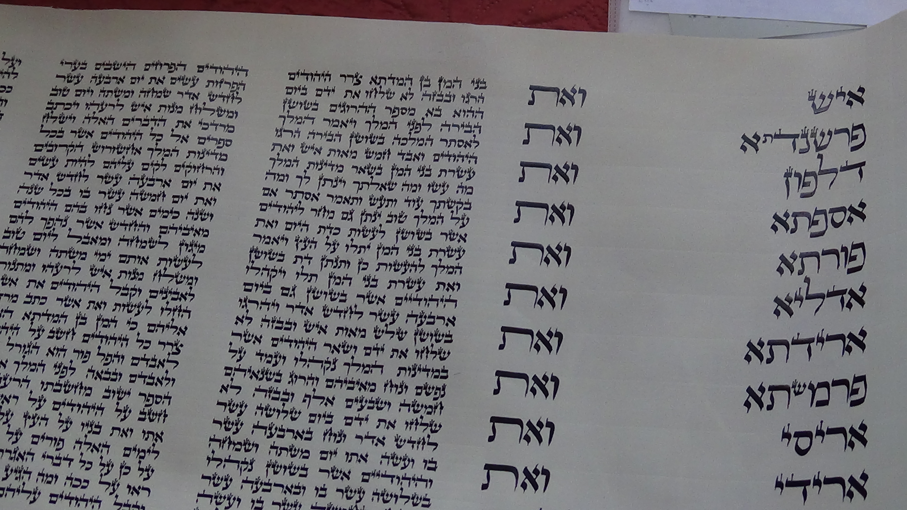
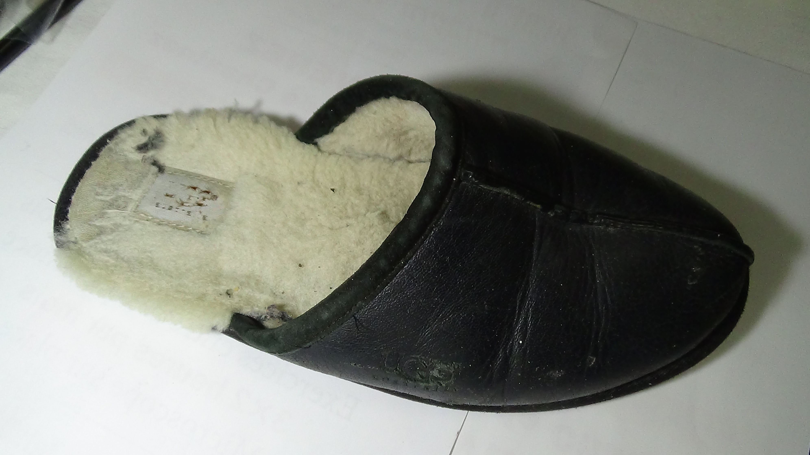
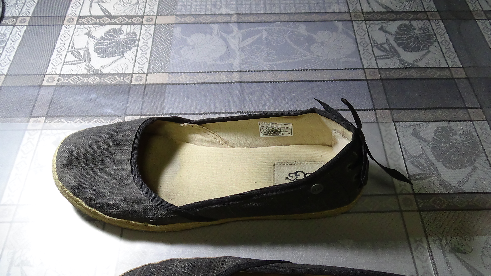
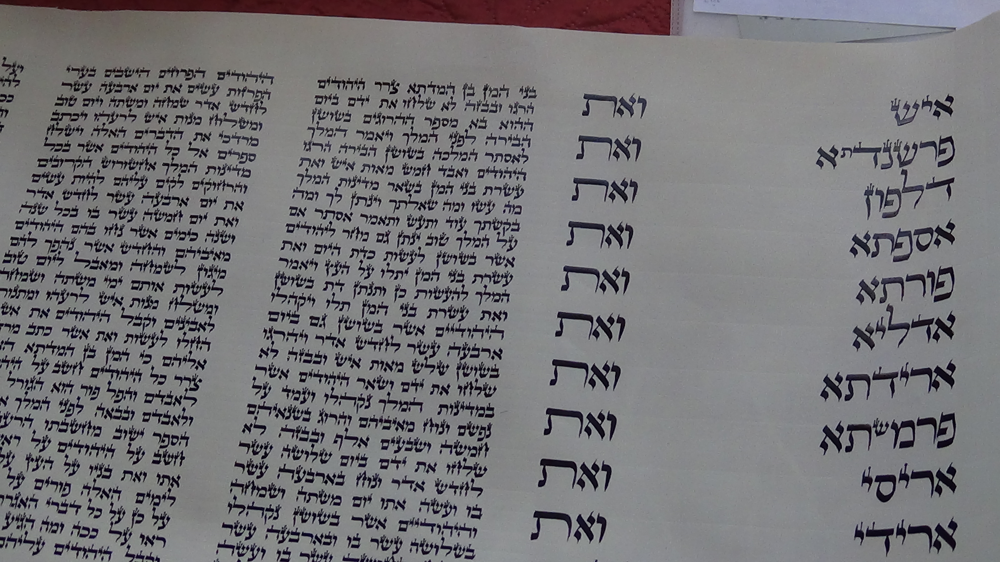
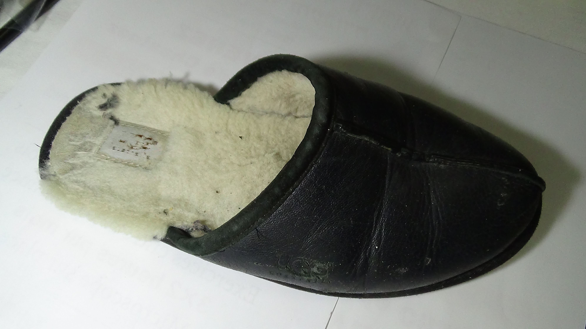
 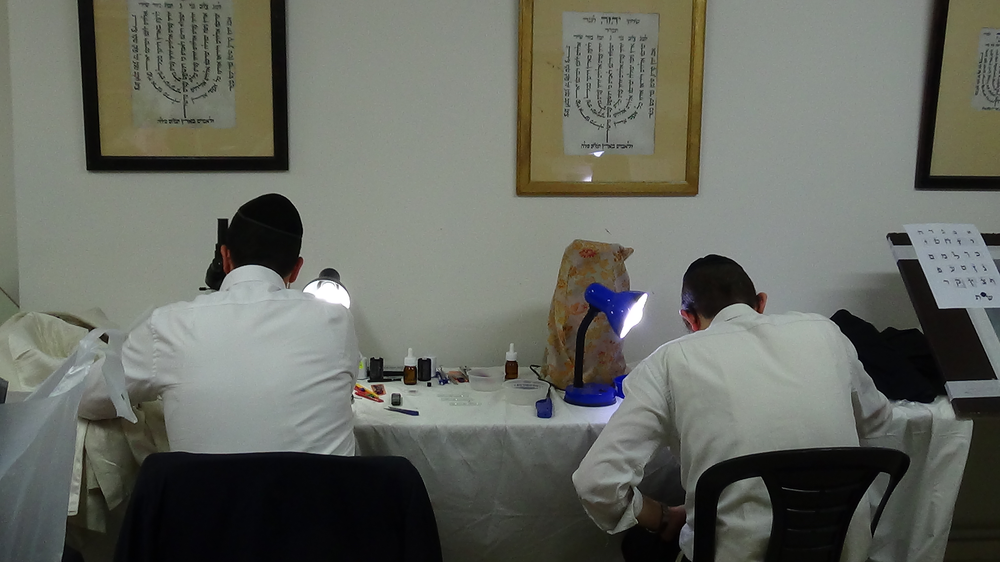
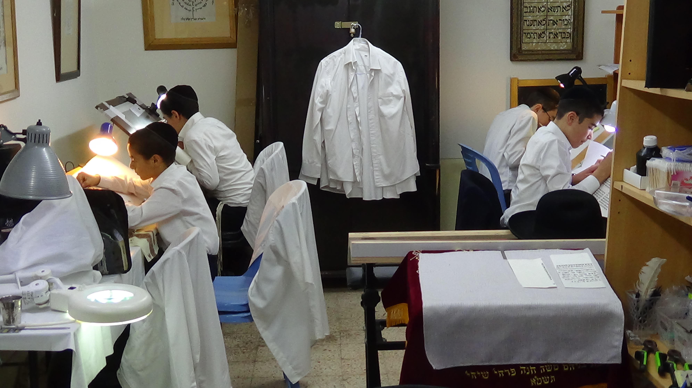
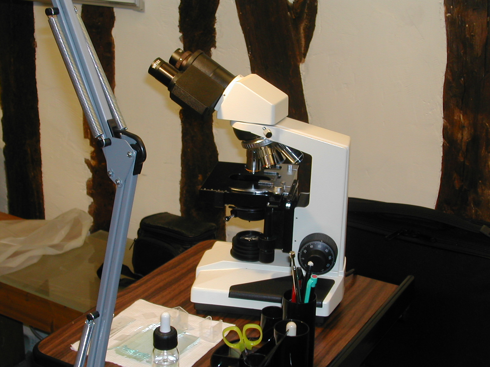
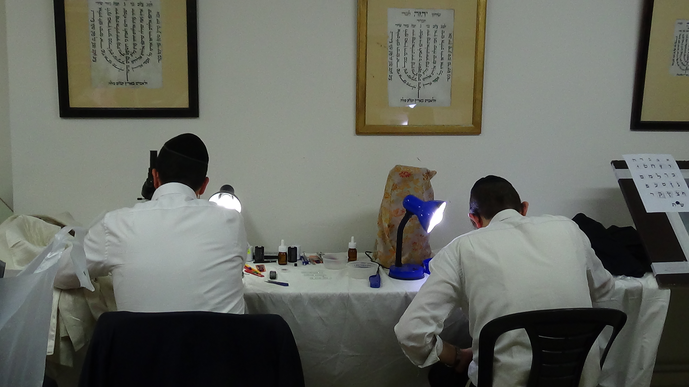
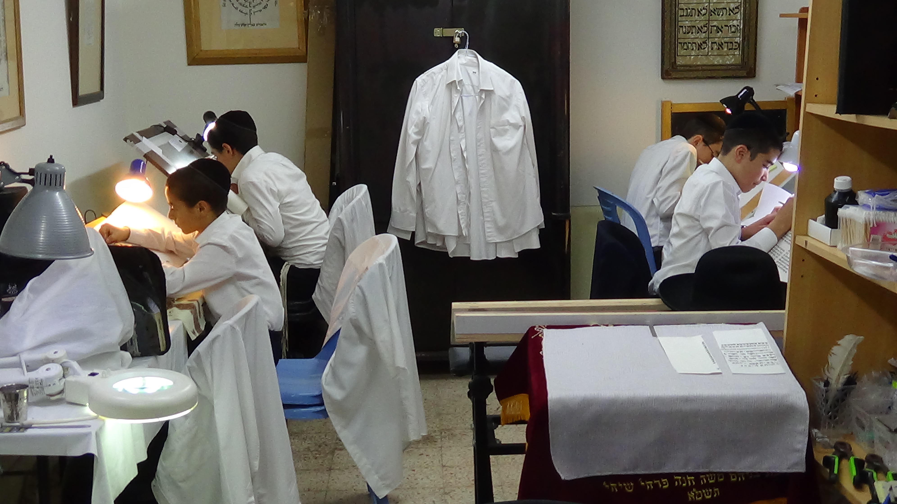
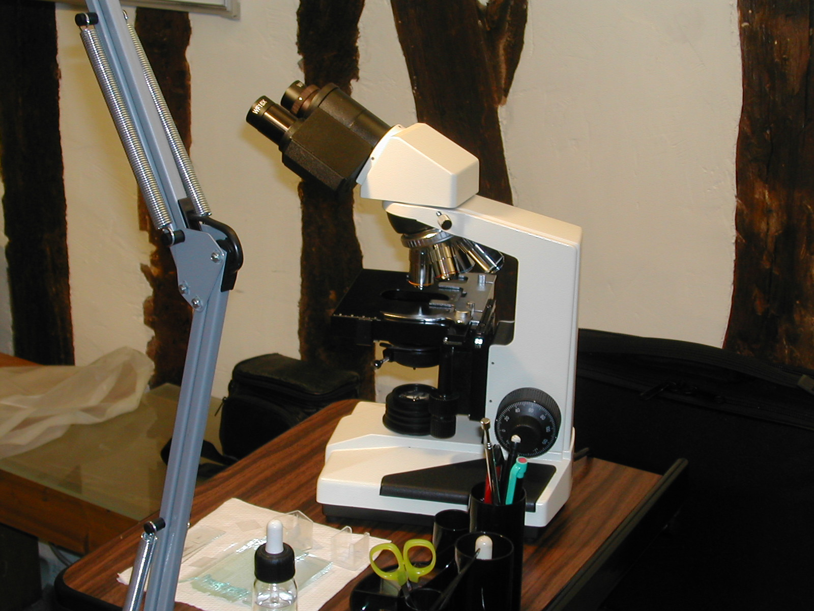
Formation Chaatnez
Le but de cette formation est:
- De connaître précisément cette mitsva : savoir vérifier un vêtement et connaître les lois du Choul’han Arou’h.
- D’arriver à comprendre comment est fabriqué un vêtement.
- De connaître l’utilisation du microscope professionnel.
ORGANISATION PRATIQUE DE LA FORMATION:
En Israël plusieurs lieux de formation:
- Jérusalem, Ranana, Natania, Tel Aviv.
- Dans un lieu adapté par exemple Synagogue ou Beth Hamidrach.
PROGRAMME DE LA FORMATION:
- Connaissance du fil, du tissu, du microscope, utilisation d’une loupe et de la pince**,...
- Vérifier la composition d’un tissu,
- Connaissance des points de contrôle des vêtements simples à vérifier (écharpes, pulls, cravates, etc...)
- Connaissance de la vérification d’une veste, pantalon, manteau, ...
- Etude du Choul’han Arou’h
DUREE DE LA FORMATION:
- Environ 3 séances de 1h30 environ par mois pendant 8 mois.
- Travail à la maison d’un cours à l’autre.
- Suivi des questions après la formation.
MATERIEL DE LA FORMATION:
- PRÊT d’un microscope et de tout le matériel de vérification pendant 8 mois.
**fourniture de la loupe et de la pince ainsi que tout le matériel de vérification